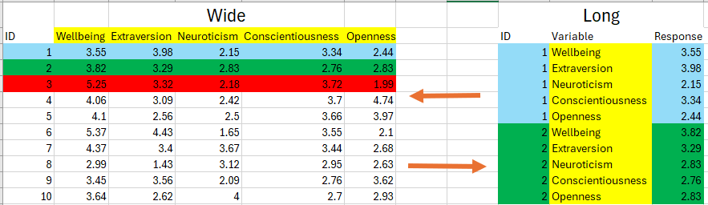

getwd()[1] "C:/Users/0131045s/Desktop/Programming/R/Workshops/rintro/activities/week11"In contrast to the last set of activities, this section is more of a reference guide than an end-to-end cleaning example. That’s because the tools you learn here might not always pop up, or at least are unlikely to all pop up in the one data frame. Nonetheless, when you combine the functions you learn here to clean data with the functions from last week, you will be able to handle an impressive amount (probably around 80%) of any data cleaning challenges you will encounter in your research.
By the end of this session, you should be capable of the following:
Understand the concepts of wide and long data and be capable of pivoting (i.e., transforming) from one format to another.
Know how to merge together separate data frames into one file that you can clean.
Identifying and handling missing data (NA values).
Let’s begin by ensuring your working environment is ready for today’s session. Open RStudio or Posit Cloud and complete the following tasks to set everything up.
Make sure you have a week10 inside your course directory and you have set it as your working directory.
Click:
Session → Set Working Directory → Choose Directory
Navigate to the folder you created for this course (this should be the same folder you used for previous workshops).
Create a new folder called week10 inside this directory.
Select the week10 folder and click Open.
Don’t forget to verify your working directory before we get started
You can always check your current working directory by typing in the following command in the console:
getwd()[1] "C:/Users/0131045s/Desktop/Programming/R/Workshops/rintro/activities/week11"Next, we will create our second R script for today. Call your second script 10-data-wrangling-p2.
Go to the menu bar and select:
File → New File → R Script
This will open an untitled R script.
To save and name your script, select:
File→ Save As, then enter the name:
10-data-wrangling-p2
Click Save
We only need one package for data wrangling - tidyverse.
library(tidyverse)REMEMBER: If you encounter an error message like “Error in library(package name): there is no packaged calledpackage name”, you’ll need to install the package first by editing the following for your console:
install.packages("tidyverse") #replace "package name" with the actual package nameYou need to download several files for this activity and move them to your week 10 folder.
demographics.csv
reaction_time.csv
wide_personality.csv
example_missing_data.csv
Once they are in your week 10 folder, make sure to load each of them in R in your new script.
df_demographics <- read.csv("demographics.csv")
df_rt <- read.csv("reaction_time.csv")
df_personality_wide <- read.csv("wide_personality.csv")
df_missing <- read.csv("example_missing_data.csv")In wide data, each row represents a unique participant, and each column represents a separate variable.
In wide data, each row represents a unique participant, and each column represents a separate variable. Table 6.1 shows an example of data in wide format. Each row contains all the information on a specific participant across each variable collected. For example, in one row of information, we can observe that participant 2 is 25 years old, 165 centimeters tall, weighs 60kg, and has a BMI score of 22.
| ID | Age | Height | Weight | BMI |
|---|---|---|---|---|
| 1 | 30 | 175 | 76 | 24.8 |
| 2 | 25 | 165 | 60 | 22 |
| 3 | 35 | 185 | 80 | 23.4 |
If you are like most psychologists, you are used to seeing data in wide formats. Data is often inputted in wide format in software like Excel or SPSS, as it easier for humans to read. We are used to scanning data horizontally (left-right) rather than vertically (up-down). Because each participant is in a single row, repetition in the data frame is minimized, again making it easier for us to read.
In long data, each row contains a participant’s single response to a single variable. The table below illustrates data in long format. Instead of having a column for each variable, there is one column that identifies the measured variable, and another column contains the participant’s response to that variable. If multiple variables are collected, each participant has several rows, with each row representing a single response to a single variable.
| ID | Variable | Value |
|---|---|---|
| 1 | Age | 30 |
| 1 | Height | 175 |
| 1 | Weight | 76 |
| 1 | BMI | 24.8 |
| 2 | Age | 25 |
| 2 | Height | 165 |
| 2 | Weight | 60 |
| 2 | BMI | 22 |
| 3 | Age | 35 |
| 3 | Height | 185 |
| 3 | Weight | 80 |
| 3 | BMI | 23.4 |
Each row in Table 6.2 represents a participant’s response to a single variable. For example, in row 1, we see that participant 1 reported their age (Variable) as 30 (Value). But I have to look to other rows to see this participant’s score on other variables.
It is more difficult to scan long data to quickly capture the information that we need. However, it is often easier for computers and programming languages to work with long data. That’s why you will sometimes get long-data from external sources.
It’s highly likely that your data will need to be in wide rather than long format for your analyses. However, there is definitely a chance that you will need to convert your data to long format for certain advanced statistical analyses. If those do situations do occur, then you can follow these steps to convert your data from wide format to long format.
For this activity, we are going to be using the df_personality_wide dataset
head(df_personality_wide) ID Wellbeing Extraversion Neuroticism Conscientiousness Openness
1 1 3.55 3.98 2.15 3.34 2.44
2 2 3.82 3.29 2.83 2.76 2.83
3 3 5.25 3.32 2.18 3.72 1.99
4 4 4.06 3.09 2.42 3.70 4.74
5 5 4.10 2.56 2.50 3.66 3.97
6 6 5.37 4.43 1.65 3.55 2.10We can see that our data is currently in wide format, where each row represents a unique participant, and each column represents a separate personality variable (and ID variable).
pivot_longer() functionThe pivot_longer() function converts a wide data frame into long format. Typing ?pivot_longer into the console provides detailed information about this function in RStudio through the Help tab in the Files Pane.
There is a lot of information that will appear in the help section. I want to draw your attention to the Usage section, which contains the arguments (inputs) that we can specify in the pivot_longer() function.
There is a lot of potential inputs we can throw in, but I want to highlight the key arguments that you will use most of the time when you use this function
| Argument | Meaning |
|---|---|
data |
Here you specify the wide data frame that you want to convert to long format |
cols |
The column(s) that will be moved or altered when you pivot the data frame. |
names_to |
The names of each variable identified in cols will be stored in a new column in our long data frame. The names_to argument specifies the name(s) of that new column(s). |
values_to |
The values associated with each variable identified in cols will be stored in a new column in our long data frame. The values_to argument specifies the name of that new column. |
Let’s use this function on our df_personality_wide and call the transformed dataframe df_personality_long
df_personality_long <- pivot_longer(
df_personality_wide,
cols = Wellbeing:Openness, #we will pivot everything except ID
names_to = "Variable",
values_to = "Response"
)
head(df_personality_long)# A tibble: 6 × 3
ID Variable Response
<int> <chr> <dbl>
1 1 Wellbeing 3.55
2 1 Extraversion 3.98
3 1 Neuroticism 2.15
4 1 Conscientiousness 3.34
5 1 Openness 2.44
6 2 Wellbeing 3.82One important to note is that we rarely everpivot the ID column, because that enables us to identify which participant’s score each variable. Let’s look at what happens if we do include ID in the cols argument
pivot_longer(
df_personality_wide,
cols = ID:Openness, #pivot everything
values_to = "Response"
)# A tibble: 60 × 2
name Response
<chr> <dbl>
1 ID 1
2 Wellbeing 3.55
3 Extraversion 3.98
4 Neuroticism 2.15
5 Conscientiousness 3.34
6 Openness 2.44
7 ID 2
8 Wellbeing 3.82
9 Extraversion 3.29
10 Neuroticism 2.83
# ℹ 50 more rowsNow we have lost our record for identifying which participant contributed to which data point. This identifies a key about using pivot_longer() in that not EVERYTHING needs to pivoted, it depends on our analytical needs are.
include_graphics("06-pivot-visualisation.png")
In wide data, each row represents a unique participant, and each column represents a separate variable.
In wide data, each row represents a unique participant, and each column represents a separate variable. Table 6.1 shows an example of data in wide format. Each row contains all the information on a specific participant across each variable collected. For example, in one row of information, we can observe that participant 2 is 25 years old, 165 centimeters tall, weighs 60kg, and has a BMI score of 22.
| ID | Age | Height | Weight | BMI |
|---|---|---|---|---|
| 1 | 30 | 175 | 76 | 24.8 |
| 2 | 25 | 165 | 60 | 22 |
| 3 | 35 | 185 | 80 | 23.4 |
If you are like most psychologists, you are used to seeing data in wide formats. Data is often inputted in wide format in software like Excel or SPSS, as it easier for humans to read. We are used to scanning data horizontally (left-right) rather than vertically (up-down). Because each participant is in a single row, repetition in the data frame is minimized, again making it easier for us to read.
In long data, each row contains a participant’s single response to a single variable. The table below illustrates data in long format. Instead of having a column for each variable, there is one column that identifies the measured variable, and another column contains the participant’s response to that variable. If multiple variables are collected, each participant has several rows, with each row representing a single response to a single variable.
| ID | Variable | Value |
|---|---|---|
| 1 | Age | 30 |
| 1 | Height | 175 |
| 1 | Weight | 76 |
| 1 | BMI | 24.8 |
| 2 | Age | 25 |
| 2 | Height | 165 |
| 2 | Weight | 60 |
| 2 | BMI | 22 |
| 3 | Age | 35 |
| 3 | Height | 185 |
| 3 | Weight | 80 |
| 3 | BMI | 23.4 |
Each row in Table 6.2 represents a participant’s response to a single variable. For example, in row 1, we see that participant 1 reported their age (Variable) as 30 (Value). But I have to look to other rows to see this participant’s score on other variables.
It is more difficult to scan long data to quickly capture the information that we need. However, it is often easier for computers and programming languages to work with long data. That’s why you will sometimes get long-data from external sources.
There has been a growing trend/push for researchers to store their data in long format when making it available or downloadable online, as this can make data easier to find and extract using computational methods.
So it is worthwhile to know how to pivot your data from Long to Wide if you ever come across a dataset you need that is in long format.
To do this, we can use the pivot_wider() function. Typing ?pivot_woder into the console provides detailed information about this function in RStudio through the Help tab in the Files Pane. Check the collapse box for what that should look like.
The table below shows the key arguments of this function.
The following should appear in the help pane when you type ?pivot_wider into your console.
| Argument | Meaning |
|---|---|
data |
The long data frame that you want to convert to wide format |
id_cols |
The columns that help identify each participant. This is often the values that are repeated in each row within a long data frame (e.g., like ID or any independent variables) |
names_from |
When we pivot from long to wide, we will be creating new columns for each variable that we collected data on. We need to tell R where to find the names for those variables. |
values_from |
We need to tell R where to find the values for the new columns that we are creating. |
Let’s use pivot_wider() to convert our long_df back into wide format.
pivot_wider(df_personality_long,
id_cols = ID,
names_from = Variable,
values_from = Response)# A tibble: 10 × 6
ID Wellbeing Extraversion Neuroticism Conscientiousness Openness
<int> <dbl> <dbl> <dbl> <dbl> <dbl>
1 1 3.55 3.98 2.15 3.34 2.44
2 2 3.82 3.29 2.83 2.76 2.83
3 3 5.25 3.32 2.18 3.72 1.99
4 4 4.06 3.09 2.42 3.7 4.74
5 5 4.1 2.56 2.5 3.66 3.97
6 6 5.37 4.43 1.65 3.55 2.1
7 7 4.37 3.4 3.67 3.44 2.68
8 8 2.99 1.43 3.12 2.95 2.63
9 9 3.45 3.56 2.09 2.76 3.62
10 10 3.64 2.62 4 2.7 2.93Look familiar? If you compare it to our original df_personality_wide, you’ll notice they look exactly the same - which is what we should expect!
head(df_personality_wide, n = 10) ID Wellbeing Extraversion Neuroticism Conscientiousness Openness
1 1 3.55 3.98 2.15 3.34 2.44
2 2 3.82 3.29 2.83 2.76 2.83
3 3 5.25 3.32 2.18 3.72 1.99
4 4 4.06 3.09 2.42 3.70 4.74
5 5 4.10 2.56 2.50 3.66 3.97
6 6 5.37 4.43 1.65 3.55 2.10
7 7 4.37 3.40 3.67 3.44 2.68
8 8 2.99 1.43 3.12 2.95 2.63
9 9 3.45 3.56 2.09 2.76 3.62
10 10 3.64 2.62 4.00 2.70 2.93Missing values, often represented as NA in R, occur when data is not available or cannot be recorded for certain observations. This can occur due to various reasons such as non-response in surveys, data entry errors, or incomplete data collection processes. It’s essential to understand and address missing values appropriately to avoid biased or misleading results in data analysis. In psychological research, dealing with missing data is a common challenge that requires careful consideration to ensure the integrity and validity of analyses.
Detecting missing values in datasets is the first step towards handling them effectively.The quickest way to check if you have missing data in R is through the functions colSums() and is.na(). The function colSums we count up the number of certain values within each column of a data frame, and we can tell it to search for missing (NA) values through the is.na() function.
Here we are going to use the df_missing data frame which contains data on demographic information.
head(df_missing) id age gender
1 1 25 Male
2 2 NA Female
3 3 30 Male
4 4 28 <NA>
5 5 35 Female
6 6 NA MaleWe can see immediately there are some missing values, but let’s count exactly how many they are using the colnames() and is.na() function.
colSums(is.na(df_missing)) id age gender
0 3 3 We can see there are no missing values for id, but we have three missing values for age and gender.
To remove rows or columns with missing values, we can use functions like drop_na(). Here’s how we can remove rows with missing values in the age column:
df_removed <- drop_na(df_missing)
head(df_removed) id age gender
1 1 25 Male
2 3 30 Male
3 5 35 Female
4 8 22 MalecolSums(is.na(df_removed)) id age gender
0 0 0 In psychological research, we’ll often encounter situations where data from multiple sources or studies need to be combined for analysis. We might have collected demographic information separately from participants answers on experimental tasks. We may have collected data using a variety of platforms (e.g., survey data using Qualtrics and response data using PsychoPy). Additionally, the research software tools we use might modulate the data. For example, if we run a study in Gorilla Research, then each separate task and questionnaire gets downloaded as separate files.
Merging data involves combining data frames based on their common variables. Let’s image we have two data frames called df_demographics and df_rt. These data frames contain information on both participants demographic information and their reaction time on a specific task and which condition they were randomly assigned to. Let’s load both of these data frames into R (make sure you have downloaded them and put them into your working directory before running the following code).
head(df_demographics) ID gender age
1 EoYncPX1QK Female 24
2 Zn1yzAeYA4 Non-Binary 21
3 B4iCIhzgPi Male 24
4 9sJnqQM0lo Female 23
5 FPSgiOjwA7 Non-Binary 23
6 0g0AFLyHCe Male 24head(df_rt) ID condition mean_rt
1 EoYncPX1QK no caffeine 269
2 Zn1yzAeYA4 no caffeine 206
3 B4iCIhzgPi no caffeine 187
4 9sJnqQM0lo no caffeine 217
5 FPSgiOjwA7 no caffeine 160
6 0g0AFLyHCe no caffeine 255Ideally, we would have one merged data frame that would contain a participant’s response on all our variables. However, there are some complications with these two data frames. If you check the number of rows in each data frame, we can see there are differing number of participants.
nrow(df_demographics)[1] 60nrow(df_rt)[1] 42There are 60 participants in the demographics data frame whereas there are only 42 participants in the reaction time data frame. If the study was online, maybe participants gave up after completing the demographic information, maybe there was connection issues, maybe the data did not save correctly. Whatever the reason for this mismatch in participants, we need to account for this when we merge these data frames together.
I am going to show you two ways we can join these datasets: inner_join, and left_join
The inner_join() function joins together two data frames, but it will only keep the rows that have matching values in both data frames.
When we use inner_join() we need to specify the value(s) that we want to match across both data frames. Once we do, then in the case of the df_demographics and df_rt data frames, what this means is that only the participants who match on that specified value(s) in both data frames will merged together.
Let’s create a merged data frame using inner_join and call it df_inner. The syntax for inner_join is: inner_join(df1, df2, by = join_by(column(s))
df_inner <- inner_join(df_demographics, df_rt, by = "ID")
head(df_inner) ID gender age condition mean_rt
1 EoYncPX1QK Female 24 no caffeine 269
2 Zn1yzAeYA4 Non-Binary 21 no caffeine 206
3 B4iCIhzgPi Male 24 no caffeine 187
4 9sJnqQM0lo Female 23 no caffeine 217
5 FPSgiOjwA7 Non-Binary 23 no caffeine 160
6 0g0AFLyHCe Male 24 no caffeine 255We can see that our df_inner has combined the gender and age columns from df_demographics with the condition and mean_rt columns from df_rt. When we use inner_join the order in which specify the data frames is the order in which the columns will be added. So if we wanted the condition and mean_rt columns to come first, then we can change the order:
inner_join(df_rt, df_demographics, by = join_by(ID)) ID condition mean_rt gender age
1 EoYncPX1QK no caffeine 269 Female 24
2 Zn1yzAeYA4 no caffeine 206 Non-Binary 21
3 B4iCIhzgPi no caffeine 187 Male 24
4 9sJnqQM0lo no caffeine 217 Female 23
5 FPSgiOjwA7 no caffeine 160 Non-Binary 23
6 0g0AFLyHCe no caffeine 255 Male 24
7 hlmrG4AyLu no caffeine 145 Female 22
8 oOUz7EpZDf no caffeine 240 Non-Binary 24
9 QhvvMEVq1X no caffeine 212 Male 24
10 WHdme1YyZv no caffeine 207 Female 22
11 yFTywINVDl no caffeine 236 Non-Binary 24
12 E4TDInCFgc no caffeine 157 Male 23
13 w15ouKhYjX no caffeine 139 Female 24
14 PRHjvltTq9 no caffeine 185 Non-Binary 23
15 T1INTYDoxW low caffeine 261 Male 23
16 wQgCowzLTF low caffeine 229 Female 22
17 gAPefpxFu2 low caffeine 314 Non-Binary 23
18 kJRT78syM1 low caffeine 150 Male 24
19 zigHVms3ZU low caffeine 205 Female 23
20 MdaNDDZypx low caffeine 353 Non-Binary 24
21 1kVtNcCJZR low caffeine 201 Male 21
22 vWP6tk42hT low caffeine 245 Female 23
23 uSbQmTf4hR low caffeine 242 Non-Binary 24
24 F5JS8n0pw8 low caffeine 281 Male 24
25 GNNjyhr80i low caffeine 203 Female 22
26 gg587jx1wz low caffeine 260 Non-Binary 22
27 QG48CYj01m low caffeine 113 Male 22
28 QkyZzgywzF low caffeine 162 Female 23
29 t8x4iOKwnT high caffeine 204 Non-Binary 22
30 fAazPW5qCz high caffeine 170 Male 23
31 Aug70zOtfX high caffeine 211 Female 22
32 DECqK4tIyT high caffeine 114 Non-Binary 23
33 GbdjGe0yh2 high caffeine 227 Male 24
34 yuSrPEfg8O high caffeine 175 Female 24
35 Vq0SB0N0gt high caffeine 177 Non-Binary 23
36 rCqGbWbmxW high caffeine 192 Male 22
37 crbKl4mP8f high caffeine 171 Female 22
38 PPL7VpIJAA high caffeine 114 Non-Binary 23
39 I8wcEVbUwc high caffeine 230 Male 22
40 i8MDEDiJHv high caffeine 201 Female 23
41 5ROBC8QMSK high caffeine 48 Non-Binary 22
42 QGslHuqlDI high caffeine 255 Male 23If we check the number of rows, we will see that it matches the number of rows in df_rt rather than df_demographics.
nrow(df_inner)[1] 42The function left_join keeps every participant (row) in the first data frame we feed it. It then matches participants responses in the second data frame and joins them together, once we specify a value that needs to be matched. If there is not a match on that column, then it fills the results with NA values.
Let’s create the data frame df_left using left_join(). The syntax for this function is: `left_join(df1, df2, by = join_by(ID))``
df_left <- left_join(df_demographics, df_rt, by = join_by(ID))
head(df_left) ID gender age condition mean_rt
1 EoYncPX1QK Female 24 no caffeine 269
2 Zn1yzAeYA4 Non-Binary 21 no caffeine 206
3 B4iCIhzgPi Male 24 no caffeine 187
4 9sJnqQM0lo Female 23 no caffeine 217
5 FPSgiOjwA7 Non-Binary 23 no caffeine 160
6 0g0AFLyHCe Male 24 no caffeine 255tail(df_left) #prints out the last six rows of a data frame ID gender age condition mean_rt
55 TNfJ2PV63D Female 24 <NA> NA
56 VZjyLYJOyd Non-Binary 23 <NA> NA
57 oZv0WxMU7K Male 21 <NA> NA
58 T1UopshE5K Female 24 <NA> NA
59 MZV79pikQY Non-Binary 24 <NA> NA
60 D8j28H49Lt Male 23 <NA> NAnrow(df_left)[1] 60We can see that every participant in the df_demographics is included inside the df_left data frame. If that participant does not have scores on condition and mean_rt, then NA is substituted in.
The function is called left_join() because it joins whatever is put first (i.e., left) in the function is given priority over what comes second (i.e., right).
There are two other join functions that you can use: right_join and full_join. The textbook provides more information on both. I have only left_join and inner_join here as they are probably the most important to know.
In psychology, reverse scoring is an important step in preparing questionnaire data. Many psychological scales include a mix of positively and negatively worded items. The goal is to reduce response bias (like people agreeing with everything). However, it also means that some items must be reverse scored before you calculate total or average scores.
Let’s take the Extraversion scale from the Big Five personality traits as an example.
Imagine a short questionnaire measuring Extraversion with 3 items:
“I like being the centre of attention” → Positive (higher score = more extraverted)
“I prefer to be alone” → Negative (higher score = more introverted)
“I enjoy being around others” → Positive
If someone scores high on “I prefer to be alone”, they are showing low Extraversion. But to combine this item fairly with the others, we must flip or reverse the score so that higher values always mean more Extraversion.
Let’s say participants rated each item from 1 = Strongly Disagree to 5 = Strongly Agree.
We’ll start with a small dataset of 5 participants.
Let’s say we are working with the following short Extraversion scale. Each item is rated from 1 (Strongly Disagree) to 5 (Strongly Agree).
df_extraversion <- data.frame(
ID = 1:5,
Extraversion_1 = c(5, 4, 3, 2, 1), # "I like being the center of attention"
Extraversion_2R = c(1, 2, 2, 4, 5), # "I prefer to be alone" — needs reversing
Extraversion_3 = c(4, 3, 3, 2, 1) # "I enjoy being around others"
)
head(df_extraversion) ID Extraversion_1 Extraversion_2R Extraversion_3
1 1 5 1 4
2 2 4 2 3
3 3 3 2 3
4 4 2 4 2
5 5 1 5 1Here, Extraversion_2R is the reverse-scored item. Let’s reverse it.
For items scored from 1 to 5, you reverse the score using the formula:
reversed_score = (Maximum + Minimum) - original_score
So for a 1–5 scale that translates to: (5 + 1) - original_score, which translates to: 6 - original_score
Let’s apply this to Extraversion_2R.
df_extraversion <- df_extraversion %>%
mutate(Extraversion_2 = 6 - Extraversion_2R)
head(df_extraversion) ID Extraversion_1 Extraversion_2R Extraversion_3 Extraversion_2
1 1 5 1 4 5
2 2 4 2 3 4
3 3 3 2 3 4
4 4 2 4 2 2
5 5 1 5 1 1Now, Extraversion_2 contains the correctly reversed scores. These are the values you would use when computing total or average Extraversion scores.
Most real psychological scales are longer and have multiple reverse-scored items.
Here’s a sample dataset with 10 Extraversion items. Items 2, 4, 7, and 10 are written in the opposite direction of the trait and need to be reversed:
df_extraversion <- data.frame(
ID = 1:5,
Extraversion_1 = c(5, 4, 3, 2, 1),
Extraversion_2 = c(1, 2, 2, 4, 5), #needs to be reversed
Extraversion_3 = c(4, 3, 3, 2, 1),
Extraversion_4 = c(2, 1, 4, 3, 5), #needs to be reversed
Extraversion_5 = c(3, 3, 4, 2, 2),
Extraversion_6 = c(4, 2, 2, 1, 3),
Extraversion_7 = c(5, 4, 2, 1, 1), #reverse
Extraversion_8 = c(4, 4, 3, 3, 2),
Extraversion_9 = c(5, 5, 4, 4, 3),
Extraversion_10 = c(1, 2, 1, 3, 5) #reverse
)
head(df_extraversion) ID Extraversion_1 Extraversion_2 Extraversion_3 Extraversion_4 Extraversion_5
1 1 5 1 4 2 3
2 2 4 2 3 1 3
3 3 3 2 3 4 4
4 4 2 4 2 3 2
5 5 1 5 1 5 2
Extraversion_6 Extraversion_7 Extraversion_8 Extraversion_9 Extraversion_10
1 4 5 4 5 1
2 2 4 4 5 2
3 2 2 3 4 1
4 1 1 3 4 3
5 3 1 2 3 5Manually reversing each item one at a time can be slow and error-prone. Instead, we can reverse score all relevant items in a couple of steps using three tools from the dplyr package:
mutate() – to create new variables
across() – to apply a function across multiple columns
all_of() – to select specific columns from a character vector
We first list the names of the reverse-scored items in a character vector:
reverse_items <- c("Extraversion_2", "Extraversion_4", "Extraversion_7", "Extraversion_10") #put all the items into a vectorWe’ll apply the formula:
Reversed Score = 6 - Original Score
This works because our items are scored from 1 to 5, so 6 is the maximum + 1.
We use mutate() with across() to apply this formula to every item in our list, and save the results as new columns ending in _reversed:
# Automatically reverse all columns that end in R
df_extraversion <- mutate(
df_extraversion,
across(
.cols = all_of(reverse_items),
.fns = ~ 6 - .x, #this is the formula for rescoring: the maximum + 1 (in this example 6) minus the participants score (.x)
.names = "{.col}_reversed" #this renames the columns
),
.keep = "unused"
)
head(df_extraversion) ID Extraversion_1 Extraversion_3 Extraversion_5 Extraversion_6 Extraversion_8
1 1 5 4 3 4 4
2 2 4 3 3 2 4
3 3 3 3 4 2 3
4 4 2 2 2 1 3
5 5 1 1 2 3 2
Extraversion_9 Extraversion_2_reversed Extraversion_4_reversed
1 5 5 4
2 5 4 5
3 4 4 2
4 4 2 3
5 3 1 1
Extraversion_7_reversed Extraversion_10_reversed
1 1 5
2 2 4
3 4 5
4 5 3
5 5 1The dataset now includes the original items and new reversed versions for the four reverse-scored items. You can now safely use the reversed versions when calculating total or average scores for the scale.
df_extraversion <- mutate(
df_extraversion,
Mean_Extraversion = rowMeans(across(Extraversion_1:Extraversion_10_reversed)),
)
head(df_extraversion) ID Extraversion_1 Extraversion_3 Extraversion_5 Extraversion_6 Extraversion_8
1 1 5 4 3 4 4
2 2 4 3 3 2 4
3 3 3 3 4 2 3
4 4 2 2 2 1 3
5 5 1 1 2 3 2
Extraversion_9 Extraversion_2_reversed Extraversion_4_reversed
1 5 5 4
2 5 4 5
3 4 4 2
4 4 2 3
5 3 1 1
Extraversion_7_reversed Extraversion_10_reversed Mean_Extraversion
1 1 5 4.0
2 2 4 3.6
3 4 5 3.4
4 5 3 2.7
5 5 1 2.0df_extraversion_clean <- select(df_extraversion,
c(ID, Mean_Extraversion))
head(df_extraversion_clean) ID Mean_Extraversion
1 1 4.0
2 2 3.6
3 3 3.4
4 4 2.7
5 5 2.0